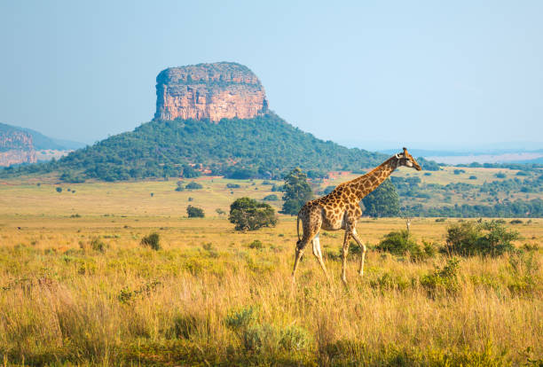

Limpopo
About this province
Limpopo Province is the northernmost province of South Africa, named after the Limpopo River that forms its western and northern borders. It shares borders with Mozambique, Zimbabwe, and Botswana, making it a unique cultural and geographical hub.

Here are four key attractions in Limpopo Province:
- Kruger National Park: One of Africa's largest game reserves, covering over 19,000 square kilometers. It's home to an incredible array of wildlife, including the Big Five: lion, leopard, rhinoceros, elephant, and Cape buffalo.
- Mapungubwe National Park: A UNESCO World Heritage Site and one of South Africa's most impressive archaeological sites. It features ancient stone ruins, museums, and stunning views of the Limpopo River.
- Pilgrim's Rest: A charming historic town that was once a major gold rush settlement. It features beautifully preserved architecture, museums, and a scenic hiking trail.
- Waterberg Biosphere Reserve: A unique and diverse region that's home to a wide range of flora and fauna. It features scenic hiking trails, game viewing, and opportunities to learn about the local culture and history.